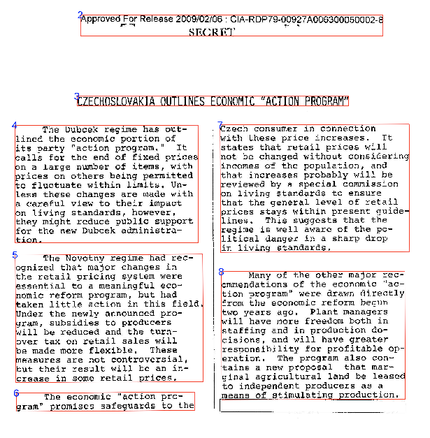

daiR is an R package for Google Document AI, a powerful server-based OCR processor with support for over 60 languages. The package provides an interface for the Document AI API and comes with additional tools for output file parsing and text reconstruction.

Use
Quick OCR short documents:
Turn images of tables into R dataframes:
## NOT RUN:
# Assumes a default processor of type "FORM_PARSER_PROCESSOR"
get_tables(dai_sync("file.pdf"))Draw bounding boxes on the source image:
## NOT RUN:
draw_blocks(dai_sync("file.pdf"))Requirements
Google Document AI is a paid service that requires a Google Cloud account and a Google Storage bucket. I recommend using Mark Edmondson’s googleCloudStorageR package in combination with daiR. See vignettes for more on authentication and setup.
Installation
Install daiR from CRAN:
install.packages("daiR")Or install the latest development version from Github:
devtools::install_github("hegghammer/daiR")Citation
To cite daiR in publications, please use
Hegghammer, T., (2021). daiR: an R package for OCR with Google Document AI. Journal of Open Source Software, 6(68), 3538, https://doi.org/10.21105/joss.03538
Bibtex:
@article{Hegghammer2021,
doi = {10.21105/joss.03538},
url = {https://doi.org/10.21105/joss.03538},
year = {2021},
publisher = {The Open Journal},
volume = {6},
number = {68},
pages = {3538},
author = {Thomas Hegghammer},
title = {daiR: an R package for OCR with Google Document AI},
journal = {Journal of Open Source Software}
}